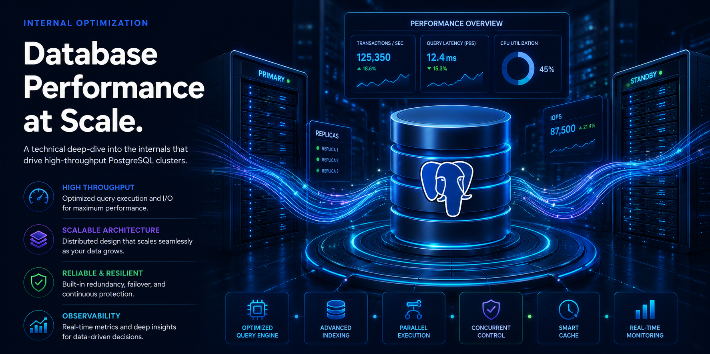
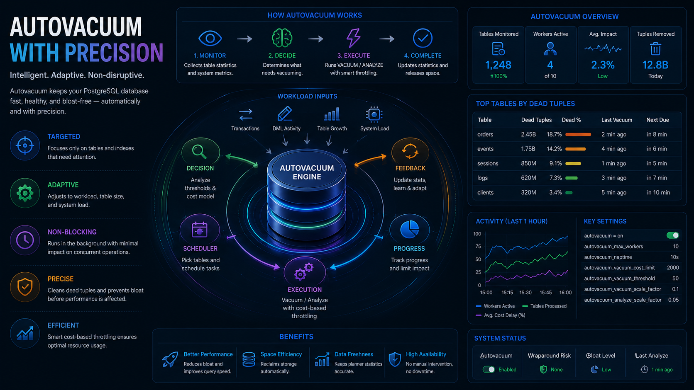
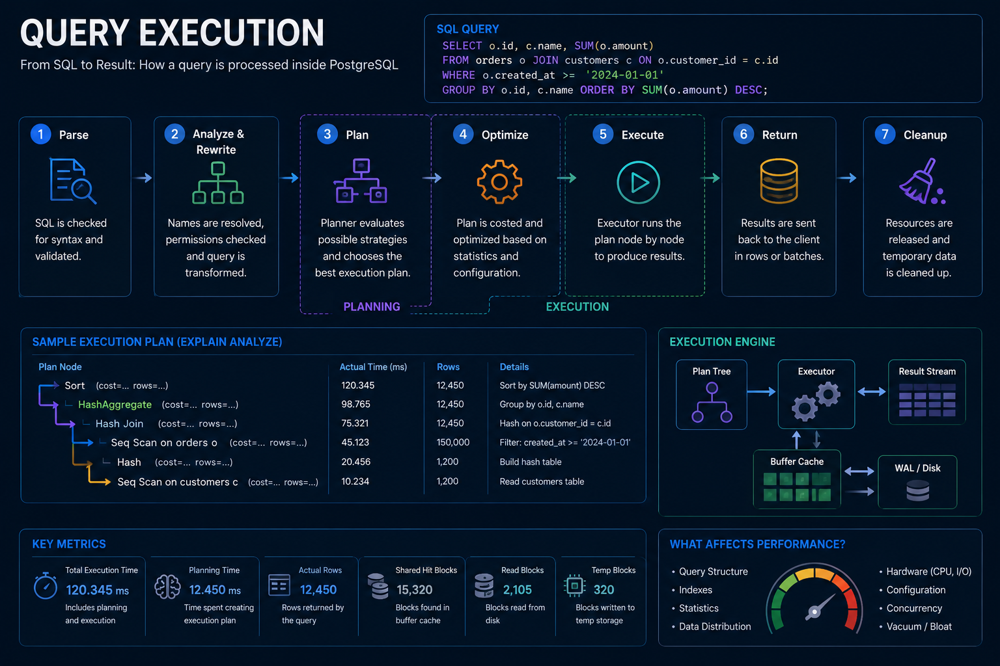
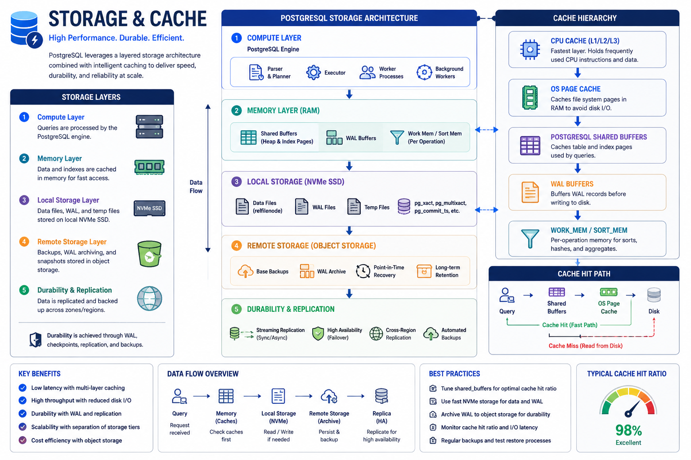
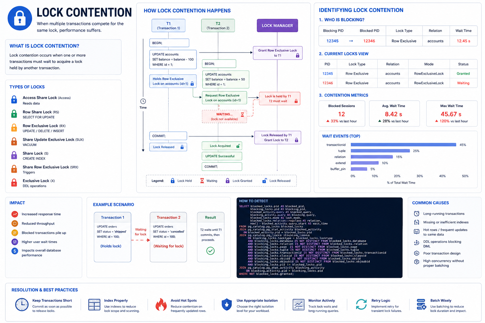
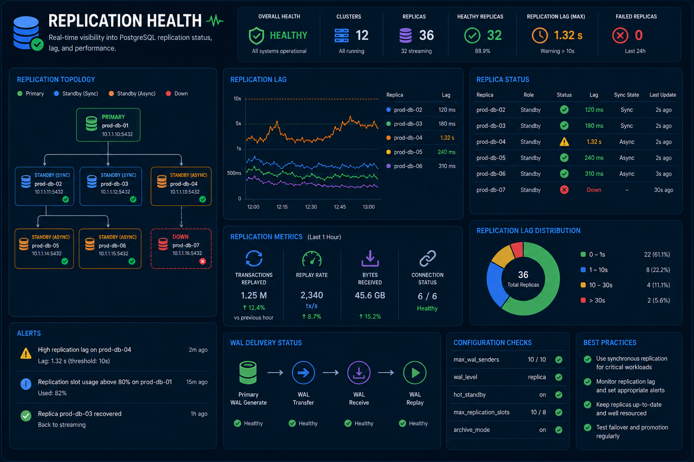
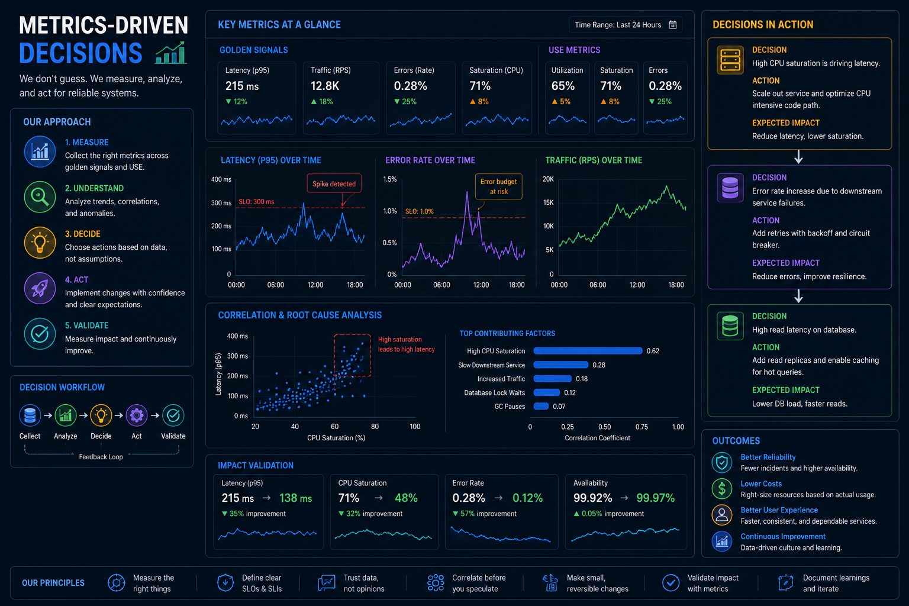

A technical deep-dive into the internals that drive high-throughput PostgreSQL clusters.

Average storage reclaimed through surgical index repacking.
Target lock-wait time for critical transaction chains.
Throughput increase via partition pruning and buffer optimization.

Dynamic, table-level autovacuum thresholds that protect throughput while eliminating bloat.

Rewrite costly joins and optimize planner behavior for mission-critical analytics and transactional workloads.

Align buffer sizing, WAL settings, and OS-level tuning for more efficient read/write patterns.
I replace coarse autovacuum settings with precision, table-level thresholds. This ensures that massive tables are vacuumed frequently enough to prevent wraparound and bloat, but without saturated disk I/O.

I stabilize transactional throughput by reducing serialization waits and optimizing long-running queries.

I tune WAL and streaming replicas so lag stays minimal even under heavy write load.

Every fix is backed by actual cluster telemetry, not guesswork.
I don't just fix the database; I leave your engineering team with the knowledge, scripts, and metrics necessary to maintain peak performance long after my engagement ends. My comprehensive handover ensures you are fully equipped to scale confidently without risking stability.
A technical tuning engagement should deliver measurable improvements in latency, storage, and throughput.
Average query speedup
Reduction in blocking waits